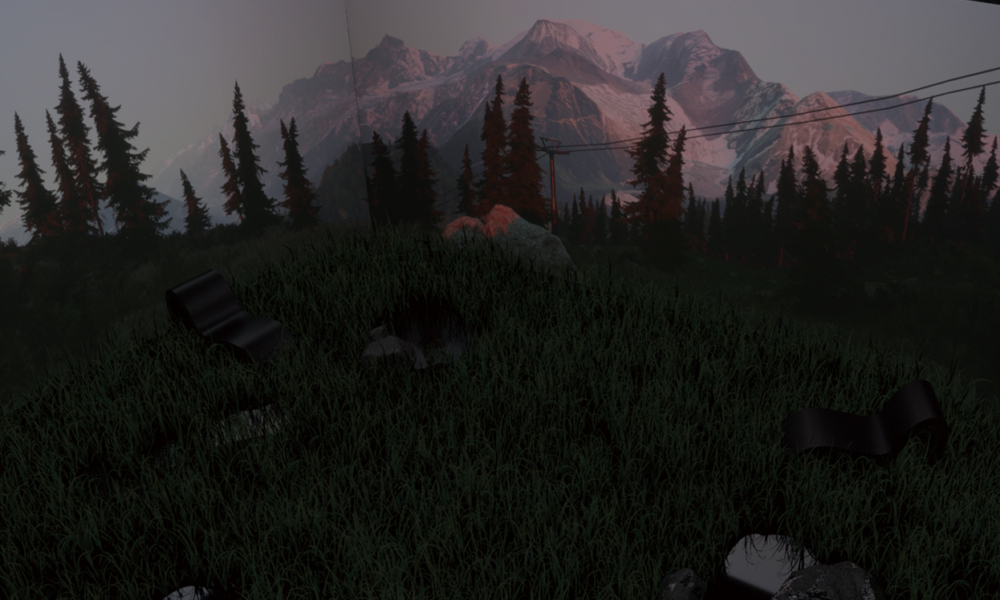

The setting
A digital landscape combines open space, vegetation and a quiet atmosphere. The scene becomes a shared setting for an ambient spatial experience.
A landscape that listens.
A slower kind of interaction.
An ambient landscape inside the Cube, designed to shift with movement and sensory input. Whisperfield explores a quieter relationship between people, digital nature and responsive space.

Rather than asking for constant attention, the environment proposes slow, legible changes. Its design intent is to support focus and grounding while leaving room for different sensory preferences.
A digital landscape combines open space, vegetation and a quiet atmosphere. The scene becomes a shared setting for an ambient spatial experience.
Audience movement and sensory input are the proposed drivers of change. The interaction stays in the background so the landscape can be experienced at an individual pace.
Neurodiverse comfort is a design direction. The current presentation communicates the atmosphere and interaction concept; it does not claim measured therapeutic outcomes.